— Hochzeitsfotografin in München & Donauwörth
— Hochzeitsfotografin in München & Donauwörth
Fotos, die euch diesen Tag noch einmal fühlen lassen.
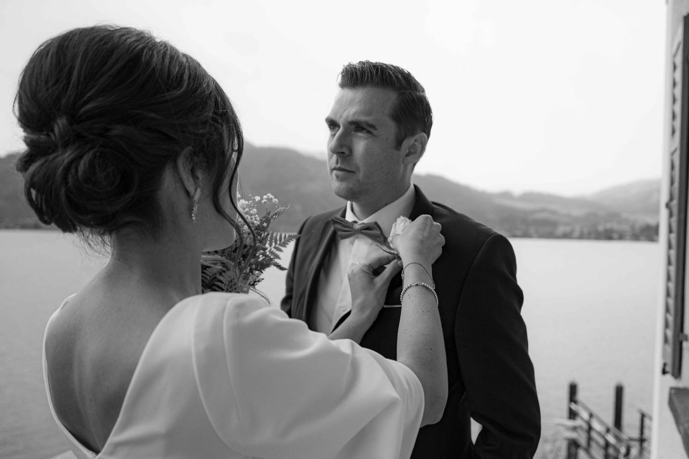
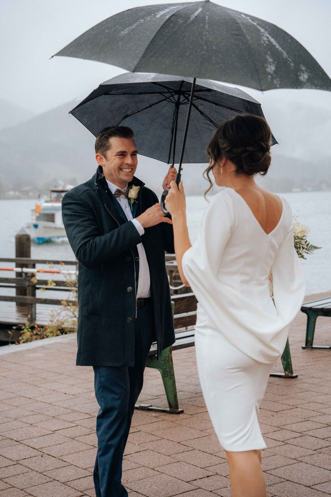
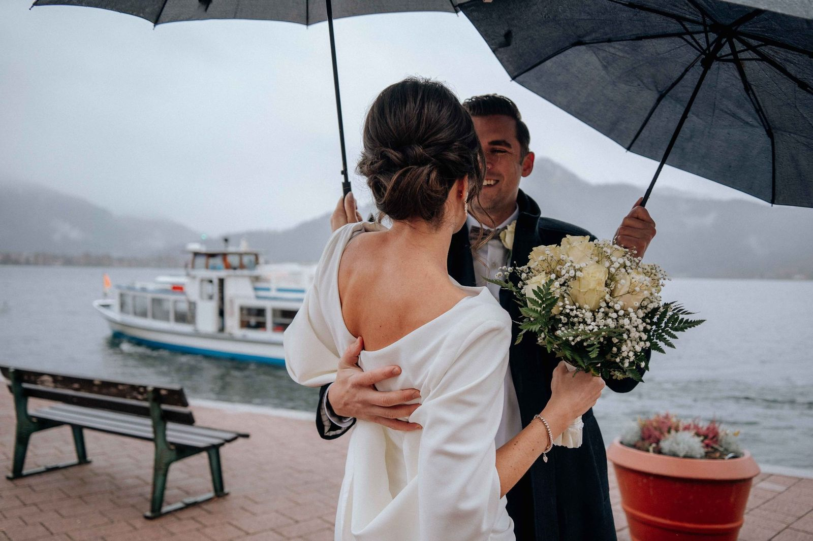
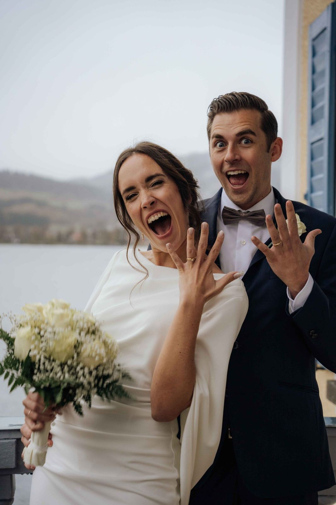
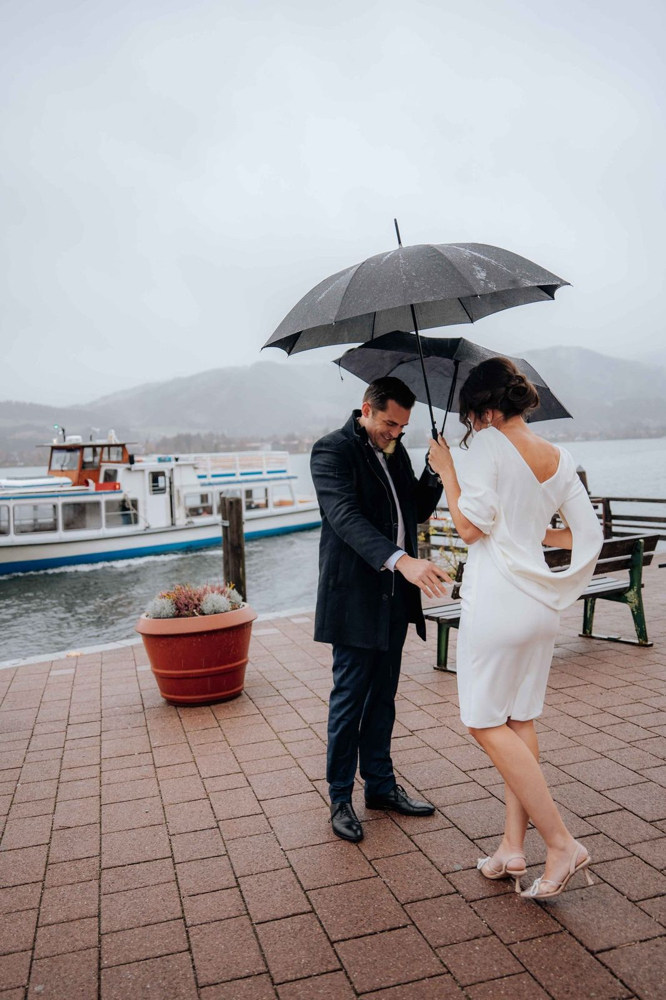
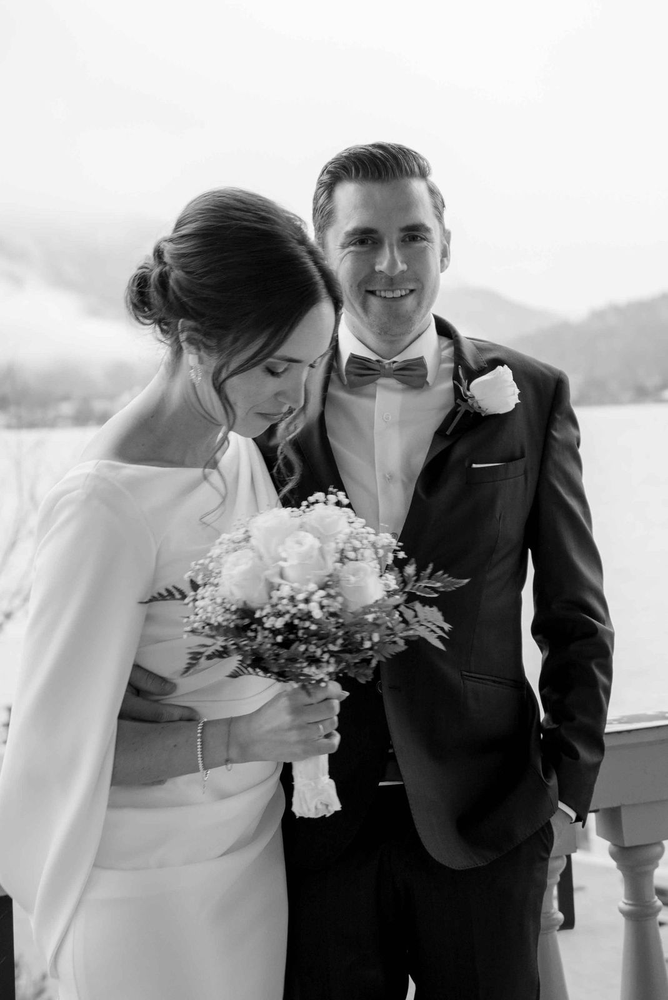
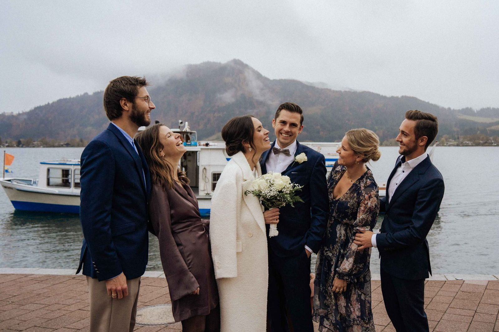
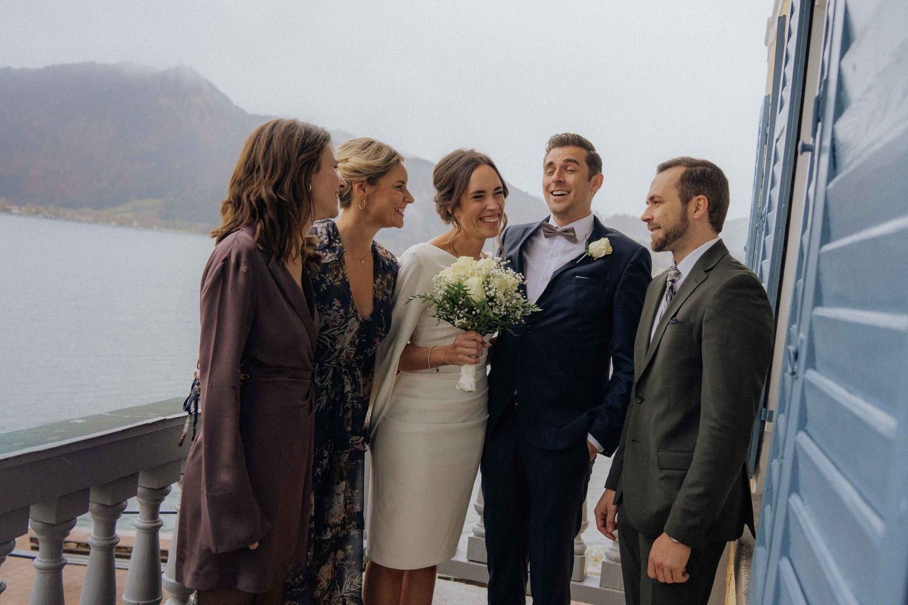
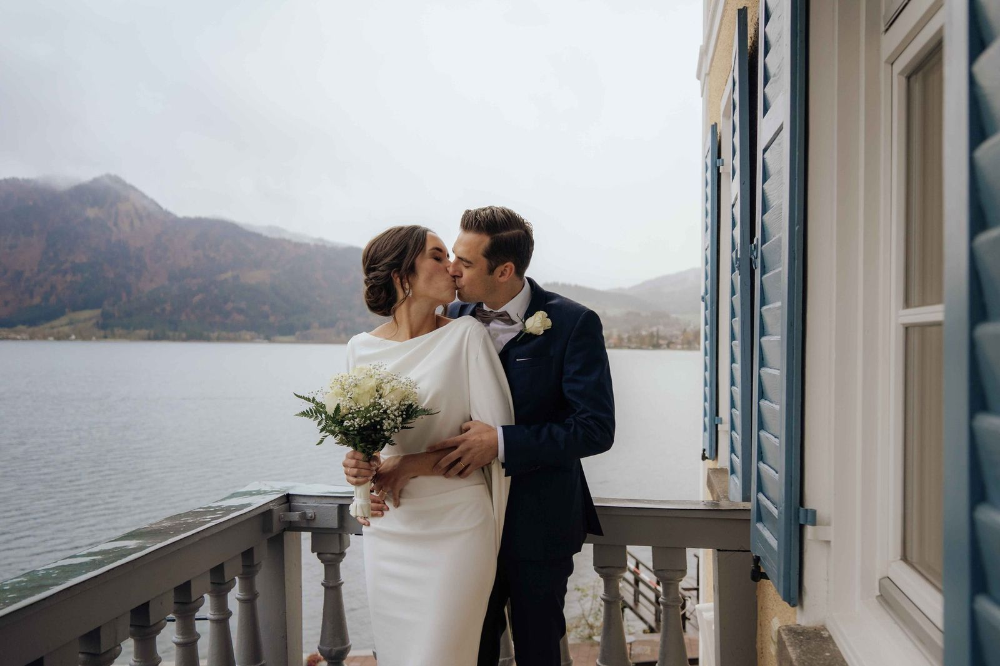
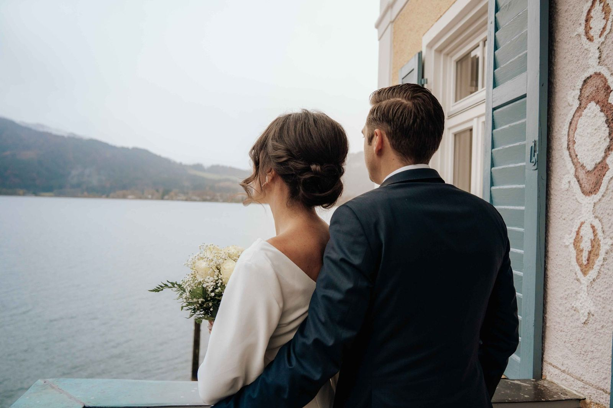
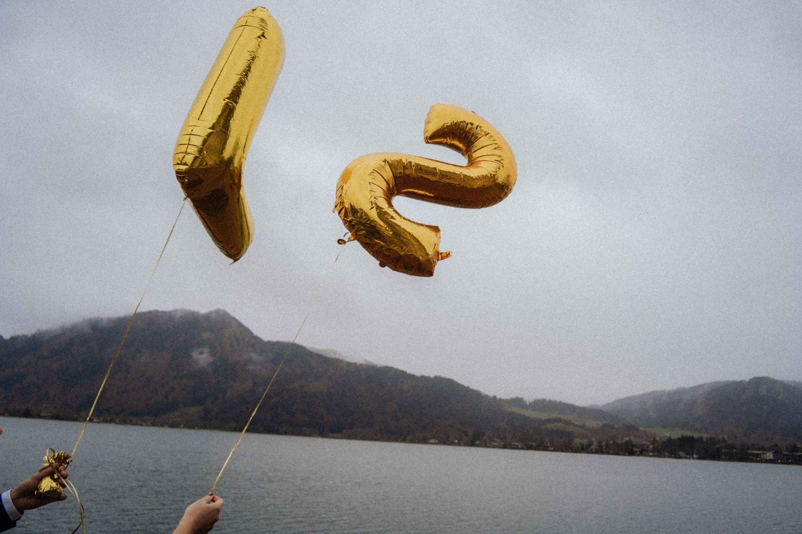
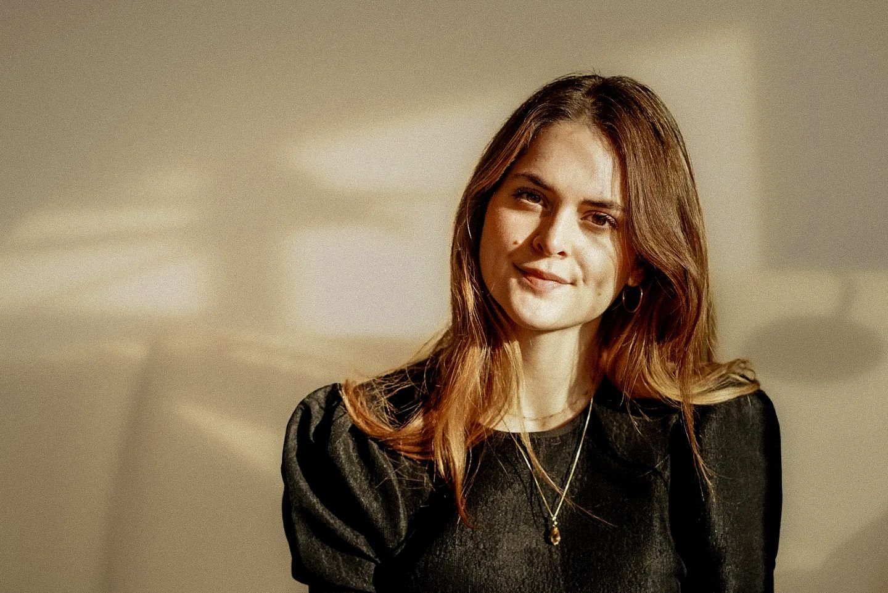
Ich liebe diesen Beruf. Jedes Mal aufs Neue. Dieses Gefühl von „That’s the shot!“ — egal ob bei der freien Trauung, beim Babybauchshooting oder wenn ich das perfekte Foto für Deine Website schieße.